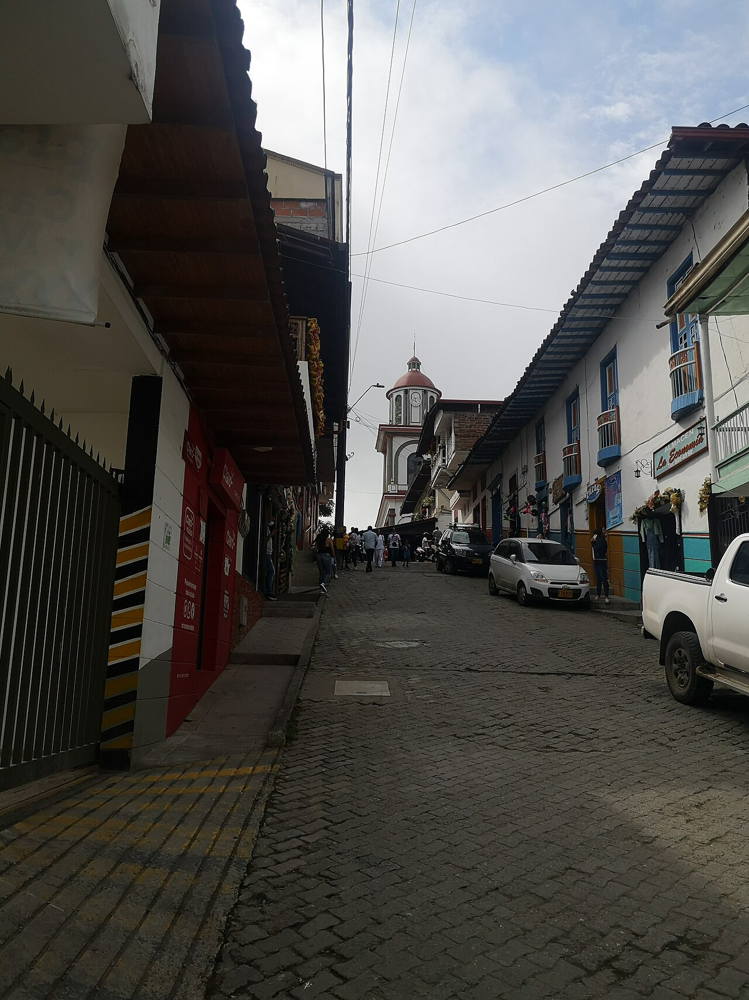

Petroglifos
Consulta un recorrido acompañado para conocerlos y cuidar este patrimonio.
Ubicar en el mapa ↗Suroeste · Antioquia, Colombia
Petroglifos, cafetales y cerros que abren la mirada al Suroeste.
Qué conocer ↗Conocer su historia ↓
¿Tienes un negocio en Támesis? Déjanos tus datos para participar ↗
Conoce el destino
Los petroglifos conservan huellas de la presencia indígena en el territorio. La vida cafetera y los caminos rurales suman otras historias a Támesis, un municipio donde paisaje y memoria se encuentran.

Ideas para tu visita
Elige los lugares que despiertan tu curiosidad y organiza tu recorrido a tu ritmo.
Consulta un recorrido acompañado para conocerlos y cuidar este patrimonio.
Ubicar en el mapa ↗Un referente del paisaje para explorar con orientación local.
Ubicar en el mapa ↗Conoce el templo y el entorno del parque principal.
Ubicar en el mapa ↗Imágenes redimensionadas; el encuadre puede variar según la pantalla. Las fotografías con licencia CC BY-SA conservan esa licencia.
Conecta las partes de tu viaje
Encuentra cómo moverte, dónde quedarte y comer, qué hacer y los servicios que necesitas. Explora a tu ritmo.
Aún no hay lugares publicados en este directorio.
Ubica los lugares que quieres conocer y consulta con cada sitio sus horarios, condiciones de ingreso y accesibilidad antes de organizar tu recorrido.
Ubicar Támesis en el mapa ↗No hay próximos eventos publicados.
¿Organizas un evento? Hablemos ↗Haz parte de Explorando Lugares
No te quedes por fuera.
Si tienes un hotel, restaurante, bar o tienda, ofreces transporte u organizas recorridos y actividades, queremos conocer tu negocio.
Déjanos tus datos. Te contactaremos para conversar sobre cómo incluir tu negocio en el portal.
Quiero participar ↗